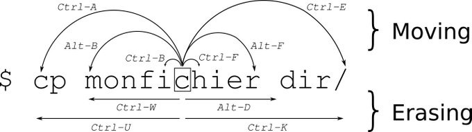
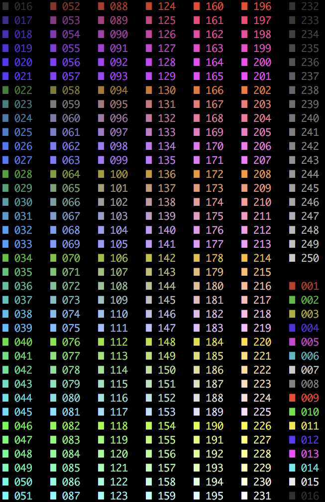

Prompt
Es el símbolo del sistema, incluso configurable, y también mediante una simbología básica te indica tus privilegios y donde estás.
El prompt es un grupo de símbolos que indican que ya puedes escribir un comando, y su primera aparición suele ser así, indicando que eres un usuario normal:
$ _
En el caso de que tienes permisos máximos, como el del usuario todo poderoso root, entonces te aparecerá de la siguiente forma:
# _
La diferencia esta en el símbolo del $ dólar o el de la # almohadilla, que indican básicamente que tipo de usuario eres, hay más simbolos que expresan un determinado significado:
- User: $ (Dólar)
- Root: # (Almohadilla)
- Home: ~ (Virgulilla)
- Cursor: | _ ▉
Luego hay un cursor, que puede ser representado de tres formas diferentes (| _ ▉), simplemente allí es donde aparecen las letras que se están escribiendo.
Shortcuts
Existen una serie de combinaciones que debes dominar para moverte en la línea de comandos, algunos son atajos de teclado y otros son comandos.
Esta imagen te permite ilustrarte más fácilmente:

ERRATA: En la imagen la letra de que acompaña el comando Ctrl está en mayúscula, en la lista está en minúscula, hacer caso al de la lista.
Atajos:
Ctrl + c: Cancela la ejecución de un proceso.Ctrl + l: Limpia la pantalla de la terminal, igual al escribir el comando clear.Ctrl + a: Mueve el cursor al inicio de la línea.Ctrl + e: Mueve el cursor al final de la línea.Ctrl + f: Forward cursorCtrl + b: BackwardCtrl + h: Backspace left of cursorCtrl + d: Delete right of cursorCtrl + k: Borra desde donde está el cursor hasta el final de la línea.Ctrl + u: Borra una línea.Ctrl + p: Línea anterior.Ctrl + n: Línea siguiente.
Hay más atajos que vamos a tratar con mayor profundidad más adelante.
Comandos:
Luego existen una serie de comandos, más bien son unos símbolos que extienden su funcionalidad evitando más trabajo re-escribiendo, veamos cada caso:
Ejecutar último comando
Usando doble exclamación !! y presionando la tecla ENTER ejecuta el último comando ejecutado previamente.
|
|
También lo podemos usar de la siguiente forma, por ejemplo; en combinación con el comando sudo o su podemos repetir el comando anterior pero con privilegios.
|
|
Recupera el comando con número 123 del histórico, usar el comando history para conocer el histórico de comandos ejecutados.
$ !123
Ejecuta el último comando que empieza con las letras un:
$ !un
uname -r
5.3.0-40-generic
Recupera el comando con número 123 del historico pero no lo ejecuta.
$ !123:p
Reemplazar caracteres aaa por bbb del el último comando:
$ ^aaa^bbb
Colores
Esto ya es un poco más avanzado, la terminal se puede configurar a gusto de cada quien, desde la apariencia del cliente hasta la misma terminal, a nivel de terminal es muy útil a nivel de servidores se hace para identificar si es un entorno de desarrollo o de producción para evitar cometer accidentes mediante el uso de colores, tambín ayuda a identificar elementos de interes más rapido, y por otro lado podrás poner el nombre del servidor, del ordenador en cuestión, etc.
De momento solo nos centramos en configurar la terminal y no el cliente.
Para lograrlo se usa la variable de entorno PS1 con una serie de valores, este es un ejemplo:
|
|
La primera impresión es que es muy complejo, pero aquí básicamente le definimos colores con esta sintaxis \033 por ejemplo, que imprima ciertas variables cómo \u y así entre ellas ponemos más colores, símbolos hasta construir el texto deseado.
En el siguiente enlace hay una lista de las opciones de configuración.
El bash tiene 256 colores a tu disposición, en algunos casos está desactivado, o tiene un número limitado, por otro lado, a lo largo de los años esta forma ha cambiado dependiendo de la tecnología por lo que se deberá revisar la compatibilidad y formas de usarse:
Aquí dejo una imagen con la lista de colores disponibles:

Y puedes experimentar de la siguiente forma:
|
|
La variable PS1 la podrás configurar dentro del fichero .bash_profile que está en el home de cada usuario.
Colores en algunos comandos
Para habilitar los colores de los comandos ls y grep debemos añadir las siguientes líneas en el fichero .bash_profile quedando así:
|
|